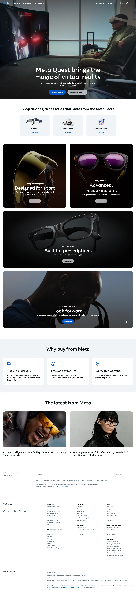

Meta 主题
Meta 的 Design.md 主题展示，围绕浅色界面、暗色界面、SaaS 产品、开发工具组织页面。
Tech retail store. Photography-first, binary light/dark surfaces, Meta Blue CTAs.
浅色界面暗色界面SaaS 产品开发工具

来源
- 来源
- getdesign.md
- 镜像
- github:VoltAgent/awesome-design-md
- 网站
- https://meta.com/
- 详情
- https://getdesign.md/meta/design-md
色板
#0064e0: #0064e0#0457cb: #0457cb#000000: #000000#0091ff: #0091ff#ffffff: #ffffff#1876f2: #1876f2#385898: #385898#a121ce: #a121ce#31a24c: #31a24c#24e400: #24e400#f2a918: #f2a918#f7b928: #f7b928
字体
display: Optimistic VFbody: Optimistic VFmono: ui-monospacehints: Optimistic VF,ui-monospace,Inter
圆角
control: 8pxcard: 32pxpreview: 32pxpill: 100pxsource: design-md
间距
xxs: 4pxxs: 8pxsm: 10pxmd: 12pxbase: 16pxlg: 20pxxl: 24pxxxl: 32pxxxxl: 40pxsection-sm: 48pxsection: 64pxsection-lg: 80pxhero: 120pxsource: design-md
使用建议
建议
- 建议：Reserve {colors.primary} (cobalt) for buy-now CTAs only — its visual weight is meaningful precisely because it doesn't appear on marketing pages。
- 建议：Use {colors.ink-button} (black) for marketing-surface primary CTAs. Pair with {colors.button-secondary} ghost outline for the secondary action。
- 建议：Apply {rounded.full} to every button, every category pill, every badge, every chip — buttons are NEVER squared in Meta's system。
- 建议：Apply {rounded.xxxl} to photographic product cards and {rounded.xl} to icon-feature tiles to maintain the visible card-hierarchy contrast。
- 建议：Switch on {ss01, ss02} together for any Optimistic VF heading. Never one stylistic set without the other。
避免
- 避免：use {colors.primary} (cobalt) for marketing-surface primary buttons — it conflicts with Meta's brand-history positioning of black-CTA-on-white-canvas marketing。
- 避免：introduce additional accent colors beyond cobalt + Oculus purple. The hardware brand is deliberately monochromatic outside its product photography。
- 避免：soften the corners of pill buttons below {rounded.full}. The pill is a brand signature。
- 避免：run feature cards without rounding — {rounded.xxxl} is the minimum for any photographic surface。
- 避免：reduce {typography.body-md} line-height below 1.50 — the negative letter-spacing already tightens the metric and any further compression breaks legibility。
查看 DESIGN.md